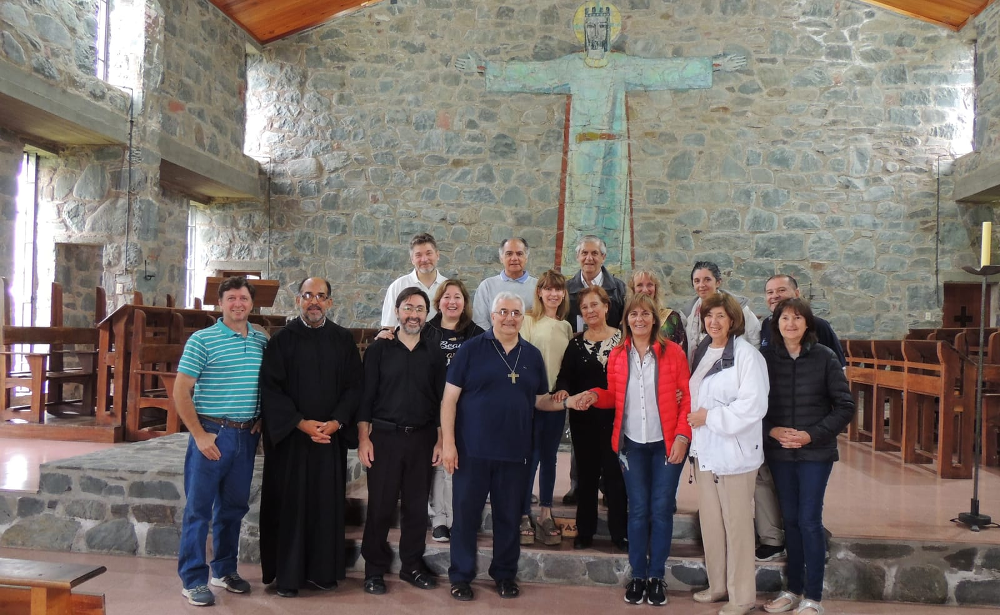
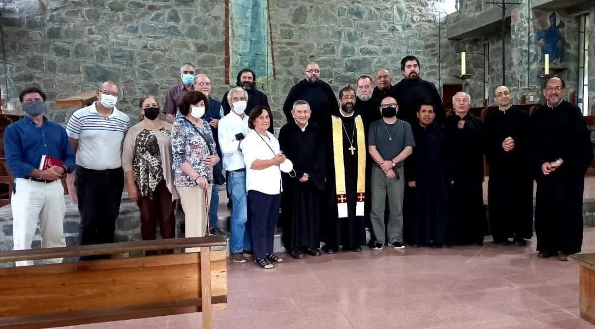

El oblato benedictino es un cristiano que, impulsado por el deseo de llevar una vida conforme al Evangelio, se vincula a una familia monástica de su elección por un lazo de orden espiritual, a fin de poder, gracias a esa afiliación, las oraciones y méritos de esa comunidad, obteniendo para sí mismo en esta comunión vital, un crecimiento en fervor y generosidad al servicio de Dios.

Abierto a todos los que viven en el mundo: hombres o mujeres, solteros o casados, sacerdotes o laicos, la Oblación constituye pues un camino de santidad ofrecido a aquellos que se sientan más atraídos por el espíritu que inspira la vida monástica tal como la concibió y organizó San Benito.
Entonces hacer profesión de oblato es dar un paso serio, que presupone una madura reflexión y por lo tanto es necesario convenir con la comunidad a la que se afilia un contrato del que resultará, de una parte y de la otra, una comunión vital y una cooperación espiritual recíproca.
Es comprometerse solemnemente en el camino de una verdadera conversión interior, en la que se deberá, día tras día, trabajar con perseverancia inspirándose en los principios de la Regla monástica que San Benito ha definido como una “escuela del servicio divino”.
Para mayor información acerca del tema escribinos a:
monasterioelsiambon@gmail.com
